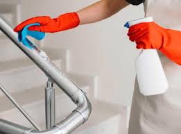

Temiz ve düzenli bir ofis, sadece kurumsal imajınızı güçlendirmekle kalmaz, aynı zamanda çalışanlarınızın motivasyonunu ve verimliliğini de doğrudan etkiler. Savar Temizlik olarak, iş akışınızı aksatmadan, size ve ekibinize sağlıklı ve hijyenik bir çalışma ortamı sağlamak için profesyonel ofis temizliği hizmeti sunuyoruz.
Profesyonel Ofis Temizliği Neden Önemlidir?
Ofisler, çok sayıda insanın bir arada bulunduğu ve mikrop yayılımının kolay olduğu alanlardır. Düzenli ve profesyonel temizlik, hastalık riskini azaltır, çalışan devamsızlığını düşürür. Ayrıca, temiz bir çalışma ortamı, şirketinizin kalite ve detaylara verdiği önemi yansıtarak müşterileriniz üzerinde olumlu bir etki bırakır.
Ofis Temizliği Sürecimiz Nasıl İşler?
Genellikle mesai saatleri dışında veya sizin belirleyeceğiniz en uygun zaman diliminde hizmet veriyoruz. Uzman ekibimiz, ofisinizin yapısına özel bir temizlik planı oluşturur. Ortak alanlar, kişisel masalar, toplantı odaları ve tuvaletler gibi farklı bölgeler için özel prosedürler uygulanır.
Ofis Temizliği Hizmeti Neleri Kapsar?
- Çalışma masaları, sandalyeler ve ofis mobilyalarının tozunun alınması
- Zeminlerin süpürülüp uygun ürünlerle silinmesi
- Çöp kovalarının boşaltılması ve dezenfekte edilmesi
- Mutfak ve dinlenme alanlarının temizliği
- Tuvaletlerin detaylı temizliği ve hijyen malzemelerinin takviyesi
- Kapı kolları, telefonlar gibi sık temas edilen yüzeylerin dezenfeksiyonu
Hangi Ekipmanları Kullanıyoruz?
- Sessiz çalışan endüstriyel tip vakum makineleri
- Elektronik cihazlara zarar vermeyen antistatik toz bezleri
- Farklı yüzeyler için renk kodlu mikrofiber bezler (çapraz bulaşmayı önler)
- Hızlı kuruyan ve leke bırakmayan zemin temizleyiciler
- Ortamı ferahlatan, kalıcı ve hoş kokulu dezenfektanlar
Ofis Temizliği Fiyatları
Ofis temizliği fiyatlandırması; ofisin metrekare büyüklüğü, çalışan sayısı, temizlik sıklığı (günlük, haftalık) ve hizmetin kapsamına göre değişiklik gösterir. Şirketinize özel, uzun vadeli ve bütçe dostu çözümler için lütfen bizimle iletişime geçin.